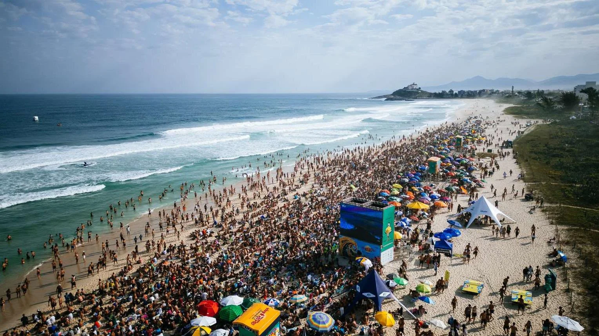

Surfe vira negócio de milhões e põe João Pessoa na rota de investimentos
Piscinas de ondas, turismo de experiência e grandes marcas impulsionam uma indústria em expansão; na capital paraibana, complexo de R$ 322 milhões une hotelaria e surfe.
Por Redação Paraíba Business, da redação • Atualizado em
O surfe vive uma nova onda de investimentos no Brasil. Além de projetar atletas, o esporte passou a mover uma cadeia que reúne turismo, hotelaria, mercado imobiliário, publicidade e tecnologia. Em 2026, o Vivo Rio Pro, etapa brasileira do circuito mundial da WSL, injetou R$ 188 milhões na economia de Saquarema (RJ), segundo estudo da EY: alta de cerca de 6% sobre 2025 e quinto recorde seguido.
O Brasil também pesa na audiência e atrai patrocinadores como Banco do Brasil, Vivo, Corona, Red Bull e Natura. A fase de campeões brasileiros ajudou a ampliar o interesse, e a modalidade passou a ser vendida como estilo de vida ligado a bem-estar e experiências. Um levantamento da plataforma Surfpool contou 19 projetos de piscinas de ondas no país, e a WSL projeta que o Brasil lidere o ranking mundial dessas estruturas até o fim de 2027.
Complexo de ondas artificiais no Polo Cabo Branco prevê investimento inicial de R$ 322 milhões e 610 empregos diretos.
João Pessoa entra na expansão das ondas artificiais
O Governo da Paraíba assinou em 31 de março de 2026 o contrato do empreendimento, que usa tecnologia da norte-americana SurfLoch e tem a Alliance na construção. Será o 12º projeto contratado para o Polo Turístico Cabo Branco, com 400 unidades de hospedagem (200 convencionais e 200 no modelo long stay). A piscina terá ondas para surfistas experientes, iniciantes e uso recreativo, abrindo uma frente de negócios em hospedagem, alimentação, serviços e entretenimento. O desafio do setor, lembra a WSL, é renovar os ídolos e manter a audiência quando a geração atual se aposentar.
Para acompanhar mais reportagens sobre economia e turismo, acesse a editoria completa de Economia ou veja os desdobramentos na seção de Esportes.